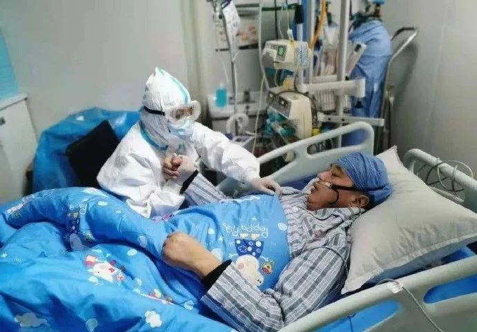

我们的朋友刘智明
原文链接 备份链接 图说：年轻时的刘智明（右三）。受访者供图。 记者：何雾 “ 第一位牺牲的武汉医院院长生前事。 ” 每个周末，郧阳地区人民医院（现十堰太和医院）团委书记刘家敏，总是能看到那个叫刘智明的年轻人提前来到职工餐厅，布置晚上舞会 …

武昌医院医生刘昭在得知上了ECMO消息时，当时就掉了泪，他告诉《人物》：「上了这个机器能救过来的概率很小，它对新生儿比较起作用，（成人）重病成功率只有20%到30%，希望是很渺茫的。」
刘智明最终不是那个残酷概率里的幸运者，2月18日上午10点54分，他因抢救无效逝世。他成了第一位因新冠肺炎死亡的在职医院院长，也是在这场疫情中第9位殉职的医护人员。
文***｜*******张月
编辑***｜*******糖槭
「要打仗了，将军没了」
2月10日，武汉下了一场小雨，天气有些阴冷，街上空空荡荡，这是封城的第18天，也是武昌医院院长刘智明在ICU的第17天。
这天是他52岁的生日，他从大年三十住进了武昌医院ICU的16床，三天后核酸检测结果呈阳性，被确诊为新冠肺炎。他一开始是重症，CT上两肺都白了，一直高烧，呼吸困难，连说话都没有力气，2月2日晚上他一度以为自己要死了，全身冒虚汗，缺氧，但戴上呼吸机又熬了过来。ICU主任徐亮是他相识十年的好友，在处理重症方面经验丰富，徐亮跟他调侃：「到了我ICU这想死没那么容易。」
刘智明看上去已经度过了最凶险的时刻。生日这天，他剃了个大光头，收到了ICU医护团队给他准备的草莓蛋糕，还有一只红色的老鼠布偶，别人给他拍了一张照片，尽管戴着透明的鼻管，但他看上去心情挺好，面带微笑对着镜头比了个V字。第二天，他把自己和礼物的照片发了一条朋友圈，并在下面留言：「感谢大家关心，估计我死不了……多少次觉得熬不住了，他（徐亮）说再撑两天就会好，我撑了20天！虽然生不如死，度日如年，但还是活着好！」
那是他的最后一条朋友圈。三天之后，他的状况突然恶化，2月14日转入距离武昌医院30公里的同济医院中法城院区，进行了气管插管治疗。无法得知他当时的神智是否清醒，但他最害怕的「万一」还是来了，在《楚天都市报》2月5日对刘智明妻子蔡利萍的采访中，她提到刘智明曾跟主诊医生讲：「如有万一，不要插管抢救。」一位名叫sherry君君的上海医护人员在微博上写道：「只有我们医护人员才知道，为什么刘院长不愿意插管。一个是病情已经十分危重，插管抢救成功概率很低，而且插管的操作极大地增加了感染其他医护人员的可能，在生死之际，他还想着身边同一战线的医护人员。」刘智明害怕因为自己导致别人感染，武昌医院一位医生在接受澎湃新闻采访时提及，确诊之后，他叮嘱其他医护人员做好防护，不停询问那些曾和他接触过的人有没有事，「万一别人被感染上，他会觉得愧疚。」

刘智明在病床上 图源武汉市第三医院官微
即使插管，刘智明的状况也没有改善，2月17日，医生给他上了ECMO抢救，那是一个更糟糕的信号，ECMO价值百万，只有少数几家医院拥有，通常用于「重症中的重症」。刘智明的表弟张志永在那天晚上得知抢救的消息，在老家十堰郧阳的众多亲戚里，他和刘智明比较亲近，其他亲戚都在给他打电话问情况，他心乱如麻，一夜未眠，盼着能被抢救过来。
武昌医院医生刘昭在得知上了ECMO消息时，当时就掉了泪，他告诉《人物》：「上了这个机器能救过来的概率很小，它对新生儿比较起作用，（成人）重病成功率只有20%到30%，希望是很渺茫的。」
刘智明最终不是那个残酷概率里的幸运者，2月18日上午10点54分，他因抢救无效逝世。他成了第一位因新冠肺炎死亡的在职医院院长，也是在这场疫情中第9位殉职的医护人员。
武汉亚洲心脏病总医院副院长金捷是刘智明以前的老领导，两人都曾在武汉市第三医院工作，金捷是院长，刘智明担任神经外科主任的同时还兼任了医务处处长，后一项职务面对着整个医院最浩繁琐碎的工作：医疗安全、病历管理、医疗信息统计、与医院内部各部门的协调。在金捷的印象里，刘智明是个非常能干的人，「他敢于担责，任何事情你交给他去办，你就放心。」
相识二十年，金捷无法接受刘智明猝然的死亡。刘智明在武昌医院治疗期间，金捷怕打扰吸氧的刘智明，曾给徐亮打过电话，对方说：「虽然一开始比较重，但已经开始往好的方向发展了。」他于是放下了心，「我们在一线的知道，这个病凶险也就在10天左右，挺过去了应该问题就不大了，我认为随着时间推移，应该越来越好了，但是没想到病情怎么会一下子又恶化了。」
永达理保险经济有限公司董事长吴永先早年在武汉工作，和刘智明熟识，常在一起喝酒聊天。得知消息时，他正在北京家中，半天没有反应，很久才缓过神来，「就像个晴天霹雳」，「我心里很难受，我觉得他没有保护好自己，可能是太大意了，也可能是太累太辛苦了。」他告诉《人物》。
武昌医院是武汉第一批收治新冠肺炎的定点医院，通知在1月21日下午下达，要求这所综合型医院病区在两天内把医院现有的将近600名病人转出，将病区改造成隔离病房，接收499名新冠肺炎患者，根据《长江日报》对武昌医院党委书记王力霞的采访，这个人数在当时仅次于金银潭医院。那天下午5点多，金捷接到了刘智明的电话，两人交流了一下转移病人和病区改造的事情，金捷感觉到刘智明有点压力，「担子比较重。」但听声音精神还是很饱满，「没有任何病的迹象。」
他回忆，刘智明说：「我干脆住到医院。」金捷说，「对的，应该和家里隔离开来。」
只有亲眼见到刘智明的人才能意识到他的疲惫和强撑，刘昭记得，改造医院那两天，刘智明几乎没怎么睡觉，在住院楼上下跑着检查改造有没有疏漏的地方，他见到刘时，发现对方脸色很差，「眼圈全部是黑的。」
医院开始收治病人的第一天，刘昭记得，门诊挤满了人，五点下班时间之后，还有七百多个号没被叫到。在他印象里，也许在更早的时候，病毒的种子就在这所医院埋下。12月31日，武汉的很多医生都看到了李文亮关于发现Sars病毒的微信截图，然而武汉市卫建委当天发布的通报是：「病毒性肺炎未发现明显人传人现象。」那个通报让很多人放下了悬着的心，刘昭记得，那时医院戴口罩的人也比较少。1月9日，一位男性发热病人在呼吸科住院，住了一周被确诊为新型冠状肺炎，转到了ICU，刘昭印象里，那是武昌医院第一例新冠患者，而当时医护人员的防护级别普遍偏低，「我们那时候不知道那个能传染，当时还没说医院有这种病人，我们都忽视了。」
他告诉《人物》，截止到2月16日，包括刘智明在内，武昌医院共有30余位医务人员感染。护士柳帆在武昌医院举办的梨园街社区卫生服务中心从事护理工作，据刘昭称，她退休之后被医院返聘。柳帆于2月7日确诊新冠肺炎，2月14日去世，她的父母和弟弟都先后因新冠肺炎去世。刘智明则在4天后离世。刘昭能感觉到医院的低落气氛，一位护士长提到院长就掉眼泪，「大家都很崩溃，老大都倒了，你说难不难过？要打仗了，将军没了。」
提到得知刘智明死讯那一刻的感受，金捷在电话那头沉默了大约一分钟，声音哽咽，「……没办法说。」疫情里，很多人都在经历类似的失去，金捷在前几天送别了自己的父亲，也是新冠肺炎，父子没能见到最后一面，金捷只能跟着殡葬车到火葬场，在车里等着，不能下车，没有葬礼，看不到遗体，最后从殡仪馆工作人员那里得到一张纸条，上面写着来领骨灰的时间。
刘智明也是如此，2月18日下午，他的遗体被送往玉笋山殡仪馆，黑色的车子驶出同济医院时，穿着一身防护服的妻子蔡利萍跟在车子后面。蔡利萍是武汉市第三医院光谷院区ICU护士长，也在一线抗疫。这一天，她拍着车的后备厢，哭声撕心裂肺，跟着车子跑了很远。

妻子蔡利萍追在车子后面跑
医者仁心
在很多人的印象里，刘智明是个善良温厚的人。
医院有新入职的学生，经济拮据，承担不起在医院南区附近租房子，「他会在外面给他们租房子，医院来承担费用，他是一个很向着职工、很细心的一个领导。」刘昭说。疫情期间，刘智明担心医护人员营养跟不上，会叮嘱食堂多准备一些鸡蛋和水果。
刘昭记得，2015年刘智明刚调来武昌医院时，来他科室交流，态度温和地询问科室里几个年轻人的名字、老家和生日，还在本子上记了下来，再见面的时候，他能叫出每个人的名字。
一位第三医院神经外科的医生向媒体回忆，「每个人有问题的他都会帮忙解决，解决不了的，也会一些建议……每个医生的进修，都是他追着去问的，该去哪里进修，进修什么方向，他都会关心。」
王德山是刘智明姐姐的同学，1996年一起在武汉脱产学习时就认识了刘智明，当时刘智明已经在第三医院工作，周末会来学校看姐姐，和王德山也混得很熟。在王德山印象里，那是一个高大帅气的小伙子，冬天爱穿蓝黑色的风衣，尽管经济上不宽裕，但为人慷慨大方，同学有个头疼脑热的都爱找他求医问药，「有什么事你跟他说一下，他只要能办到的，都是尽心尽力地去办。」
那种热情和善良在他后来的人生里始终都在，吴永先记得，刘智明的姐姐总是担心弟弟太善良，容易上当受骗，但他觉得，善良，不正是医者需要的仁心吗？
在第三医院时，刘智明担任了神经外科的主任，为科室制定的科训是：团结、奋进、精医、厚德。金捷记得，刘智明做事细心，性格开朗，患者大都信任他。2008年汶川地震发生之后，有40多位伤者被转到了武汉治疗，刘智明是抽调的骨干，参与了救治，伤者康复后回到四川，很多人依然和他保持着联系。
在一家互联网问诊平台上，一位脸部痉挛患者写下了对刘智明的评价，「他医术高超，对病人非常负责，出院后他还打了好几次电话问我术后恢复情况，我非常感动，再见面我要谢谢他。」
即使后来担任了武昌医院院长职务，刘智明也没有远离业务一线，他参与武昌医院周二或周四的大查房，除非出差，很少缺席。刘昭记得，他有空的时候还会坐门诊，自己也亲自做手术，「他手术做得很好的。」
在武昌医院的很多医护人员眼里，刘智明给武昌医院带来了很大的变化。刘昭记得，在2015年之前，这所医院技术力量比较薄弱，科室也不健全，外科只有两个科室，加起来不到一百个床位。门诊病人很少，医院的待遇比较差，留不住人，和刘昭一批进入医院的两百多人，工作四五年之后大都离开了，「那会儿我们是一盘散沙，我也想走了，实在扛不住了。」刘昭说。
刘智明调任之后，去全国各地医学院高薪招人，「他自己就是学术派的人，所以也特别重视人才。」刘昭说。一位营养科的医生刚来医院时，营养科尚未建立，刘智明告诉她，自己见过太多的鼻饲病人，临床营养是很重要的。一定要把这个事情做好。
这个温厚善良的人必要时也有雷霆手段，医院难免会有走后门的关系户，他主持了人事任免，提拔了一批有能力的科室主任。他建立了卒中中心、胸痛中心和创伤中心，神经外科、门诊、ICU都补充了力量，「慢慢把一些科室的框架建立起来。」
2017年，武昌医院从二级医院升为了三级医院，在外界的口碑也变好，来门诊看病的人比以前多了许多。「他是个踏实干事的人，医生都服他，他走了我们都很难受。」刘昭有些难过地说。

刘智明在医院门口宣传栏上的照片 图源长江日报
天道酬勤
表弟张志永告诉《人物》，刘智明成长于十堰郧县一个清贫的家庭，父亲是乡镇供销社的营业员，母亲在家务农，种着几亩地的小麦。
他有一个哥哥，两个姐姐和一个妹妹，家里孩子多，经济条件算村里比较差的。张志永记得，那是一个家教严格的家庭，母亲贤惠勤快，对孩子的读书很上心，「农村比较穷嘛，都希望读书以后能找份工作改变生活。」
那是个一直被疾病笼罩的大家庭，父亲早逝，唯一的大哥在三年前因急病去世，母亲因偏瘫卧床多年。刘智明的姐姐在悼文里回忆，在投入到对抗疫情之前，刘智明抽空回去看母亲，拉着母亲的手很长时间，舍不得松，那是母子之间的最后一面。
张志永回忆，刘智明孝顺，每年清明节会回村，拜祭父亲和大哥，也会去探望舅舅（张志永的父亲），总会记得给老人家带两条爱抽的烟，手里塞几百块钱。
他是家族里的佼佼者，是少数的靠读书改变命运的人，他1991年从湖北医学院（后并入武汉大学）毕业之后分配到十堰的湖北医药学院附属太和医院工作。时任神经外科主任的涂汉军是他的启蒙老师，在接受封面新闻采访时，他评价刘智明：「他心底善良，单纯，对病人很富有同情心，是个好医生。」涂汉军记得，刘智明有时会住在科室里，陪伴病人，在这所医院工作5年，他负责的病人治愈率很高，没有病人对刘智明提出过意见。
1996年，他被调去武汉第三医院，王德山记得，刘智明自己并不情愿，太和医院有提拔他的打算，他也愿意留在老家，但最终还是服从了调配。
如果不服从，那也许是另外一个故事。王德山看着讣闻上刘智明有些发福的黑白照片，总是想起他年轻时清瘦的样子，那个充满热情和理想主义的年轻人喜欢带着初到武汉的老乡们去看武汉大学的樱花，王德山想：「像他那样的人，将来是一定会出类拔萃的。」
此后的24年里，刘智明做了很多事，救治了很多人，勤奋地对待生活。一位书法爱好者曾想送给他一幅字，问他写什么，他找金捷参谋，金捷建议写「天道酬勤」，刘智明非常喜欢这幅字，一直挂在自己的办公室里。武昌医院东区北侧新的住院大楼正在装修，预计下个月完工，10月份医务人员就会搬进去，那是他一手推动建设的工程。再过一个月，武大的樱花也将盛放，在这些生活的酬劳到来之前，他离开了这个世界。
（根据采访对象要求，刘昭为化名）

年轻时的刘智明（右三）
没看够？
长按二维码关注《人物》微信公号
更多精彩的故事在等着你

原文链接 备份链接 图说：年轻时的刘智明（右三）。受访者供图。 记者：何雾 “ 第一位牺牲的武汉医院院长生前事。 ” 每个周末，郧阳地区人民医院（现十堰太和医院）团委书记刘家敏，总是能看到那个叫刘智明的年轻人提前来到职工餐厅，布置晚上舞会 …
原文链接 备份链接 除了菜品的装卸、运送外，我还要负责为各个医院不同的人群制定不同的菜谱。比如，护士群体需要增加抗疲劳的食材，专家组的菜品可略微清淡，而建筑工人的菜单，则需要大油大荤。 口述 | 石在余 整理 | 刘朝晖 昨晚到今天，我 …
原文链接 备份链接 澎湃新闻记者 卫佳铭 温潇潇 薛莎莎 王选辉 黄霁洁 汤琪 实习生 孟津津 郑旭 刘智明带队参加第一届武汉马拉松医疗保障工作。（左六是刘智明） 本文图片受访者供图 刘智明永远地离开了。 妻子蔡利萍记得，2月3日晚上， …
原文链接 备份链接 文/六筒 李岩半年前刚去过武汉，和家人去旅游，主要想看看黄鹤楼。那还是夏天，热气蒸得人头上冒烟。高温挡不住蜂拥的游客，摩肩接踵，拥塞的车辆在大道上艰难挪动。“真是个大都市”，她想。 李岩是河北医科大学第二医院呼吸与危重 …
原文链接 备份链接 “ - 疫 情 之 下 - 武汉的疫情就像一簇紧簇的乌云，笼罩在每一个人的心头。但所幸，在这个受伤的城市中，在每台志愿者车里，在疲于奔波的路上，总有那么一群可爱的人，温暖着我们前线医护工作者的心。 ” 1 2020年 …